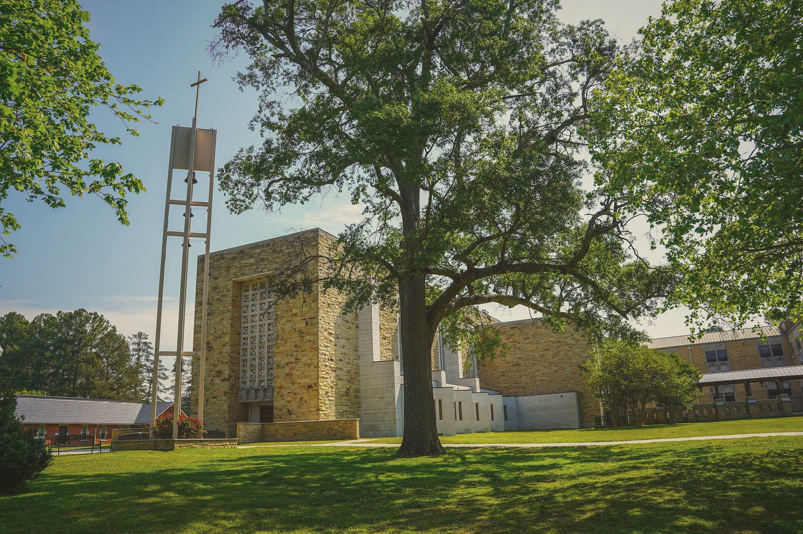
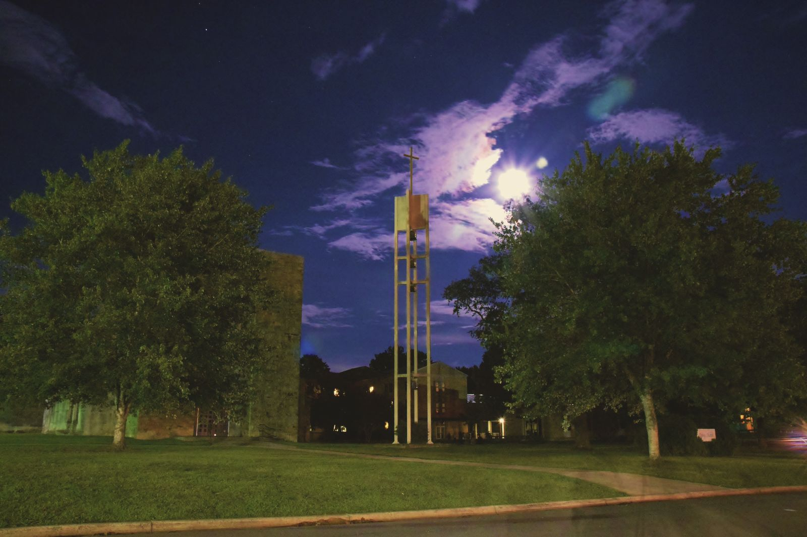
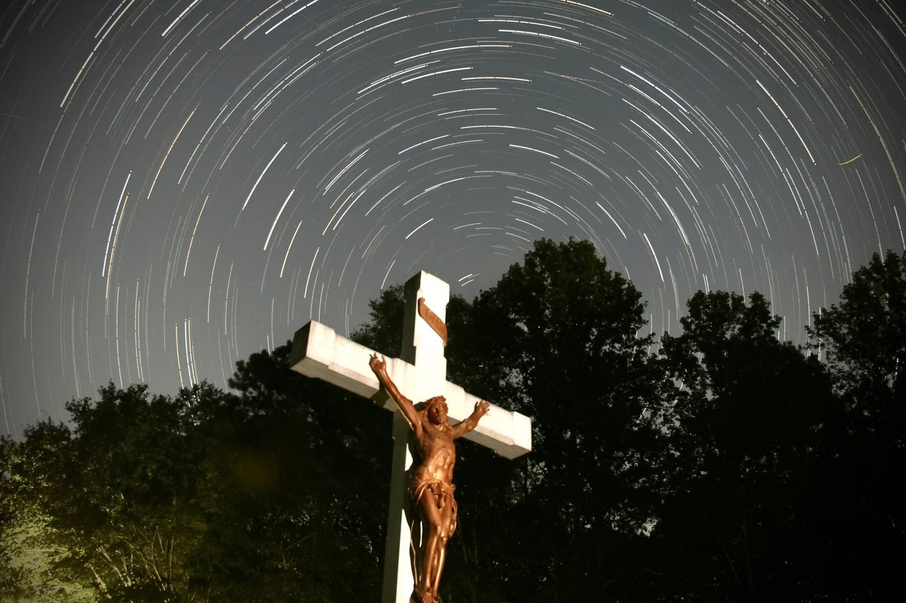

Visit
All guests are to be received as Christ
The Rule of St. Benedict, chapter 53. People of every age and faith are welcome at St. Bernard.
Come for a day
What you can see and do
Pray with the monks
The Abbey Church is open. Join the monks at Mass and the Divine Office, or sit quietly between the hours.
The Ave Maria Grotto
Br. Joseph's 125 miniatures of the world's holy places, in four acres of garden. Open every day but a few holidays.
The relics
More than a hundred saints, from the apostles to our own century, kept in the Abbey Church.
Stay with us
The Retreat & Conference Center
Boniface Hall has 46 guest rooms, each with two twin beds, a private bath and its own heating and cooling. Two rooms are wheelchair accessible, with a queen bed. There is a meeting room for up to 80 people and a smaller one for 16. Come alone for a few quiet days, or bring a parish group, a retreat or a conference.
We also welcome pilgrims to the Grotto and to the Shrine of the Most Blessed Sacrament in nearby Hanceville.
Please note: the monks do not lead directed retreats, though they may be able to hear confessions. Two people at most per room; no cribs or cots. There are no longer guest rooms inside the monastery.

Getting here
An hour from Birmingham and from Huntsville
St. Bernard Abbey
1600 St. Bernard Drive S.E.
Cullman, Alabama 35055
Just off Highway 278, about four miles from Interstate 65.
Who to call
| Monastery | 256-734-8291 |
| Retreat Center | 256-734-3946 |
| Ave Maria Grotto | 256-734-4110 |
| St. Bernard Prep | 256-739-6682 |
| Oblates (Br. Benedict Dyar) | 256-255-5845 |

The cemetery
Where the monks rest
Since 1891 the monks of St. Bernard have been buried among the trees near the Grotto, under plain white crosses, Br. Joseph Zoettl among them. You are welcome to walk there and pray for them. The graveyard chapel also keeps a columbarium for the ashes of the faithful.
Festivals
When the whole town comes
Each spring the Bloomin' Festival fills the campus with artists and craftsmen; our novice Br. Nicholas drew its map of the grounds. Bernard Blues & BBQ brings barbecue and music. The 43rd Bloomin' Festival is on 17–18 April 2027.